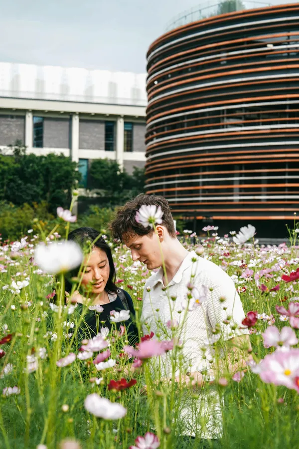
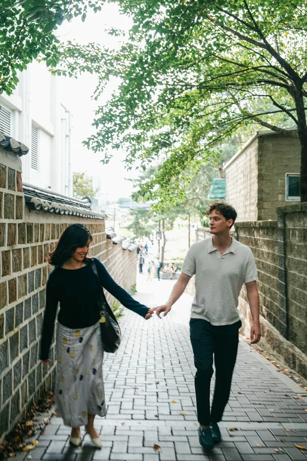
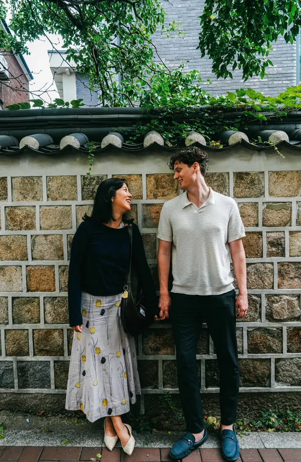
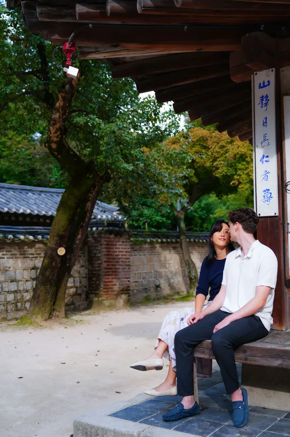
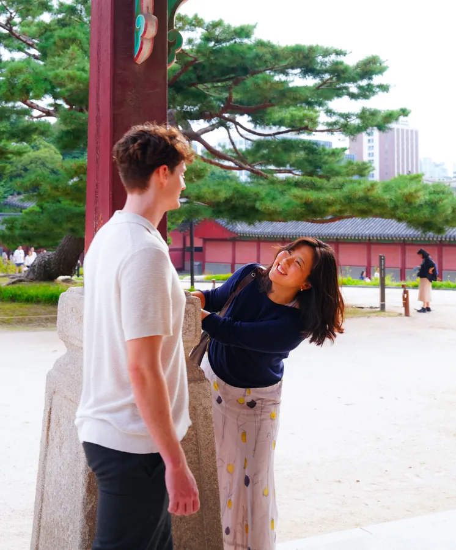
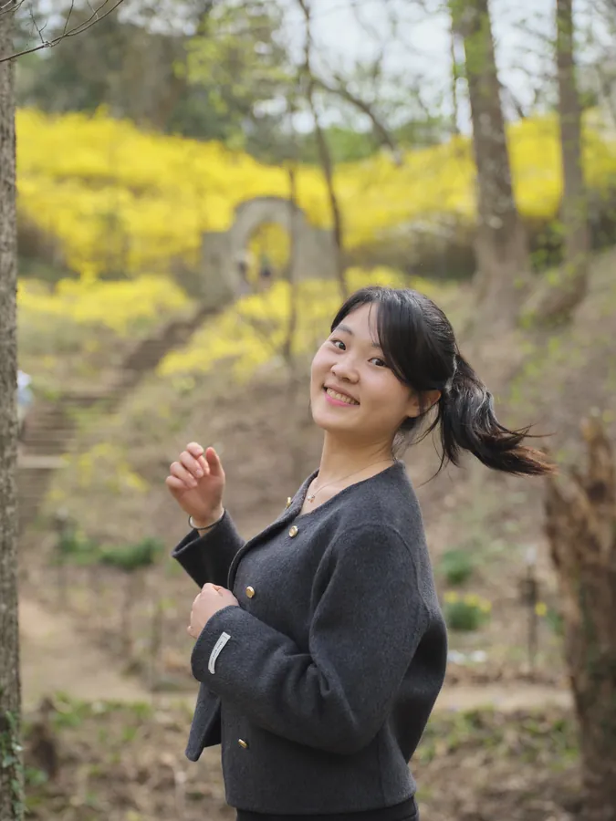

Introduction
I am an economist and software developer, and I like building things on the web. The tools below turn economic models into something you can see and play with.
I also shoot portraits on the side, so I build websites for people too. I take the photos and make the site around them.
Want a website, profile photos, or both?
Tools
Explore how populations age, or how people and jobs move between a city and its countryside.
Demography Pyramids
Population pyramids for every country, 1950–2100, with fertility scenarios, shocks, and pension and health costs by retirement age.
UN World Population Prospects 2024 Open pyramidsUrban–Rural Migration
Shock a regional economy and watch residents, farm jobs, wages and land prices adjust across Iowa's 99 counties or a synthetic test state.
Spatial equilibrium model, run in your browser Open simulatorBoth tools run entirely in your browser. Nothing you enter leaves your device.
Websites I designed

Eun Che Kim
Violinist. Biography, concerts, media and contact.
eunchekim.com Visit site
Rira Kim
Berlin-based conductor, finalist of the German Conducting Award 2025. Biography, performances, media and contact.
rirakim.com Visit siteCasual Snaps
Relaxed photos of friends and couples out in the city.





Profile Shoots
Portraits for professional profiles, résumés and social media.
